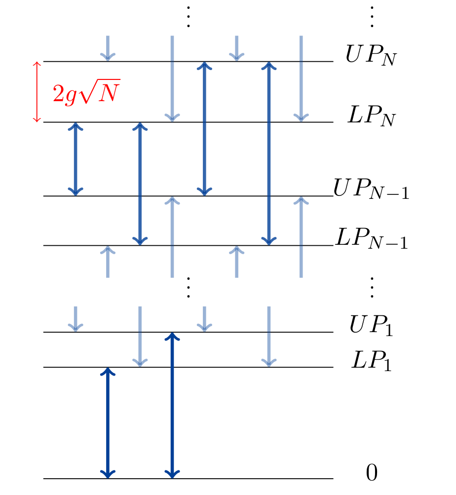
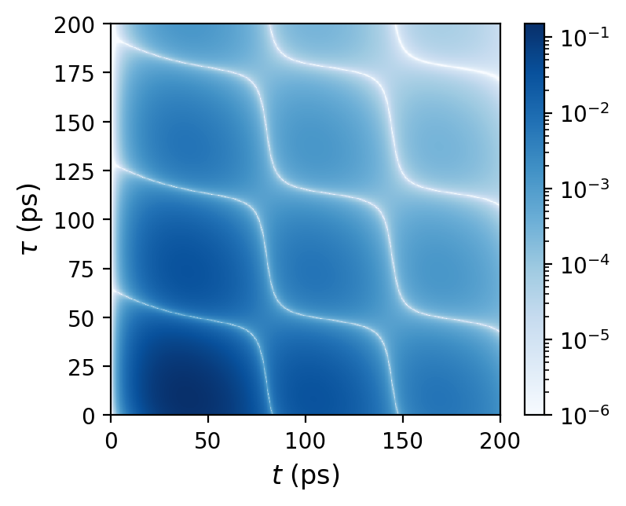
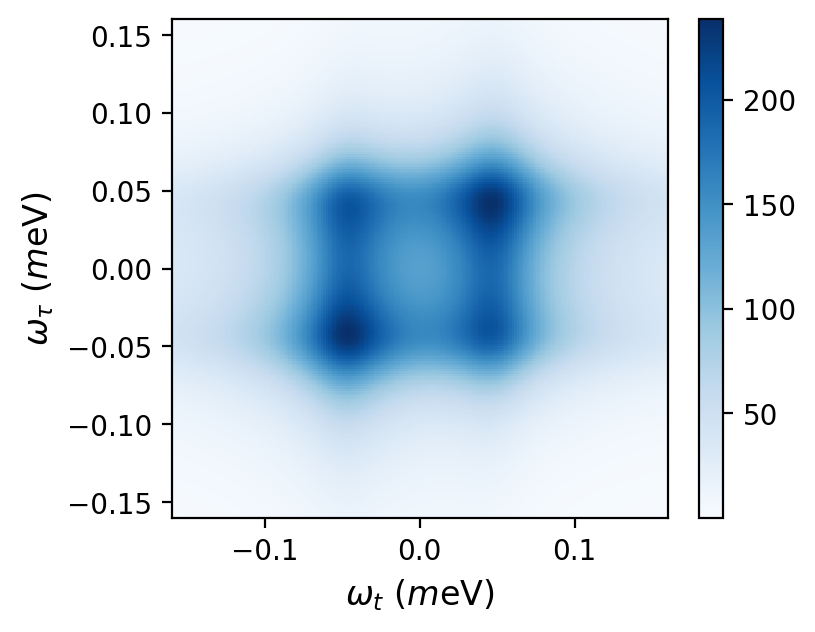

Quantum dot excitons
A semiconductor quantum dot is a nanoscale crystal embedded in a bulk semiconductor material. Quantum dots can be composed of hundreds or thousands of atoms. Their optical properties may be controlled by tuning their size. In a quantum dot, the electron is confined in all three dimensions, resulting in a discrete level structure. For this property QDs are also called artificial atoms. If a quantum dot is given a sufficiently high energy (e.g. by a beam of light), an electron can be excited to the conduction band, while a hole remains in the valence band. The electron and the hole are separated by the band gap, experience attraction and are bound together, forming an exciton. It is interesting to explore the physics arising from the interaction of excitons with light and with vibrations in the crystal lattice.
GaAs QDs: low and high resolution transmission electron microscope (TEM) images. Figures are reproduced from P. E. Vullum et al., Sci. Rep. 7, 45376 (2017), under creative commons license.
Cavity Quantum Electrodynamics
To increase interaction of the exciton with light, a quantum dot can be placed inside an optical cavity, between two mirrors. A micropillar cavity allows lateral and vertical confinement of photons. If the energy of the quantum dot exciton is tuned to match the energy of the cavity photon (experimentally this tuning is done by e.g. adjusting the temperature or applying a bias), an excitation can be reversibly exchanged between them a large number of times; the modes are coherent. The quantum dot and the cavity can be thought of as two coupled oscillators. The modes in which they oscillate (the bare modes), namely the quantum dot exciton mode and the cavity photon mode are coupled. Their coupling is enhanced by the two mirrors, which allow the photon to stay in the cavity and increases the number of interaction events. More formally, the confinement of the photon states by the cavity reduces mode volume and hence enhances the coupling which is known as the Purcell effect. If the two modes are bosonic in nature, the system is linear. The behaviour is similar to that of two classical oscillators.
Our system is different. While excitons in bulk semiconductors and in quantum wells have more bosonic nature, in QD their nature is more fermionic. In our case, we have one fermionic mode (exciton mode) and one bosonic mode (cavity photon mode), it is easier to observe quantum effects in this system. In quantum strong coupling regime we can observe a non-linear scaling of coupling strength with the total number of excitations in both the exciton and the cavity modes.Micropillar cavity: Scanning electron microscope (SEM) image, superimposed with electric field intensity indicated by the colour map. Figure reproduced from S. Liu et al., Sci. Rep. 7, 13986 (2017), under creative commons license.
Quantum Strong Coupling
A well established property of classical coupled oscillators is the avoided crossing of the normal modes at resonance, where the bare modes (in the absence of interaction) would otherwise cross. In the quantum case, there is also an avoided crossing of the real parts of eigenfrequencies of the two new modes, they are separated by vacuum Rabi frequency. The new modes are mixtures of matter and light called exciton-polaritons. Interestingly, in case of fermion-boson coupling, the energy spectrum forms an asymmetric ladder, where the mode splitting scales as the square root of the rung number. We can have transitions between higher rungs of this ladder in the quantum strong coupling regime. Importantly, the fermionic nature of excitons in QDs makes quantum strong coupling an observable effect because of this square root feature.
The light that exits the cavity in quantum strong coupling regime is highly non-classical and contains information about the exciton. The light that comes out is antibunched, it cannot be thought of as a continuous classical electromagnetic field. This system can be used to generate single photons which have uses in telecommunications, optical switching.
Avoided crossing
Jaynes-Cummings ladder
Non-linear optical response
A characteristic feature of quantum strong coupling regime is the structure of polariton states. Their energies resemble a ladder with uneven rung spacing. The distance between upper and lower levels of each rung varies with the rung number in a non-linear manner. The system can be made to climb progressively higher rungs by application of ultrashort laser pulses through one of the mirrors into the cavity and is capable of producing a non-linear optical response which can be measured experimentally. While the photons do not interact with each other directly (the cavity mode itself is linear), they can interact indirectly via matter and produce a non-linear optical response. In order to obtain a non-linear photonic response in the cavity mode, the excitation must be converted into matter, then go back to light. This takes time and initially there is no signal.
A basic example of a non-linear response is the four-wave mixing polarisation, associated with a third order non-linearity. In experiments, heterodyne spectral interferometry is a special technique, which can be used to obtain amplitude and phase information of the four-wave mixing (FWM) response. It offers a reliable and highly sensitive tool, which has a capability to perform quantum measurements on individual quantum systems such as single photons and single quantum dots, as well as ensembles. The signal can be produced by exciting the first rung of the ladder with a single pulse. Then, after some time delay, the second rung can be excited using two more identical pulses applied simultaneously. The response can be measured versus both the delay time between the pulses and the observation time (which is measured after the creation of the signal by the latest pulse). A two-dimensional spectrum can be obtained by transforming from the time representation into the frequency representation. This spectrum can provide useful information about the nature of coherent coupling within the system. I am interested in how the effect of lattice vibrations manifests itself in the four-wave mixing spectra and their impact on the coherent light-matter coupling.
FWM excitation scheme
 Two-dimensional FWM signal (upper panel) and the corresponding spectrum (lower panel).
Phonon-induced dephasing
The effect of phonon-induced dephasing, as captured in the LN (red line) but not the PA (black dashed) approaches, on a FWM signal (upper panel) and the corresponding spectrum (lower panel). Figures are adapted from: L.S. Sirkina and E.A. Muljarov, Phys. Rev. B 108, 115312 (2023).